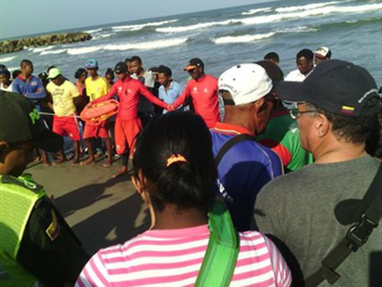

Canarias recibe nuevas embarcaciones con cerca de 450 migrantes a bordo en las últimas horas
Muchos de los migrantes, que arriesgan su vida en una peligrosa travesía, proceden de países como Senegal, que atraviesa una grave crisis política y económica.
Unas 455 personas han sido rescatadas durante la noche de este lunes y la madrugada de este martes en aguas próximas a Canarias cuando navegaban a bordo de embarcaciones irregulares, según datos recogidos del Centro Coordinador de Emergencias y Seguridad del 112 de Canarias y de Cruz Roja. Por su parte, a la isla de Tenerife, Salvamento Marítimo ha trasladado migrantes de dos embarcaciones, arribando a las 22.00 horas al muelle de Los Cristianos, en Arona, con 54 personas, de las que dos han tenido que ser traslados a centros sanitarios por diferentes patologías; mientras que a las 03.00 horas atracaron en dicho muelle con 60 migrantes rescatados, de los que seis tuvieron que ser trasladados también a centros de salud por diferentes patologías. Salvamento Marítimo también rescató una embarcación con 71 migrantes, entre ellos siete mujeres, una de ellas embarazada, y siete menores, que fueron llevados al muelle de Gran Tarajal, en Tuineje (Fuerteventura), donde tras ser asistidos por personal del dispositivo sanitario en la zona se encontraban en buen estado de salud. Te puede interesar: Ser agricultora y dueña de un negocio en un mundo de hombres: “Aún me preguntan por el jefe o piden hablar con mi marido” Por último, al muelle de Arguineguín, en Mogán (Gran Canaria), han llegado 111 migrantes de origen subsaharianos, entre ellos siete mujeres y dos menores, que fueron rescatados a bordo de dos neumáticas al sur de la isla. El dispositivo sanitario en la zona comprobó que el estado de salud era bueno.